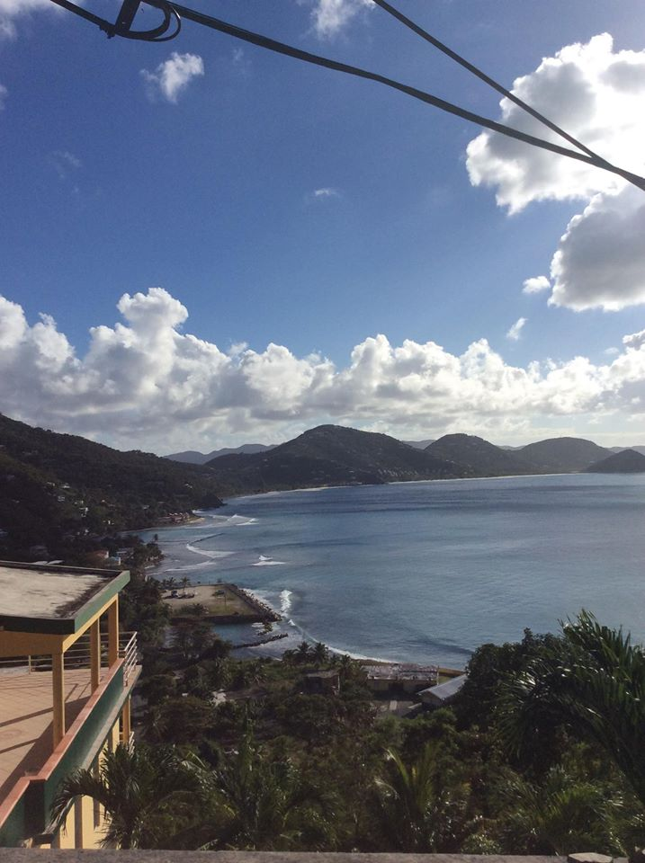
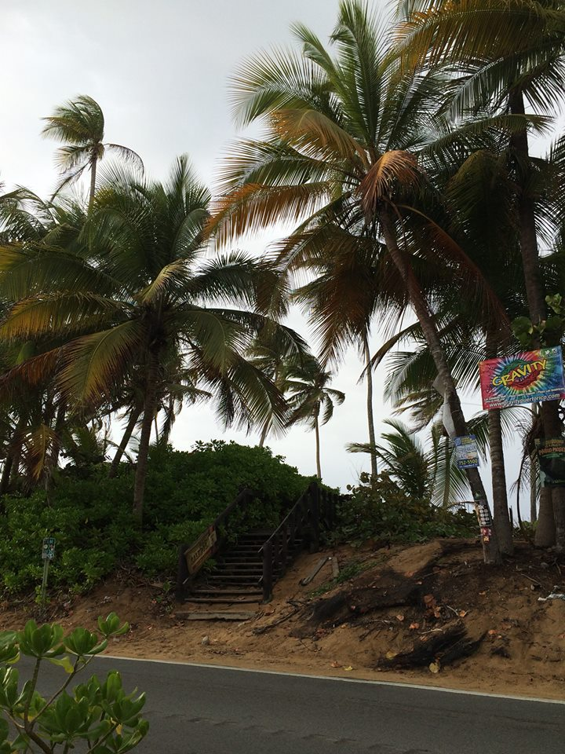

 
The view of Capoons Bay from the top of the road.
Capoons Bay is situated on the north side of the island and boasts some of the best surfing in the BVI's.
Capoons Bay is home of the Bomba Shack where the popular full moon party takes place.
The view of La calle Norzagaray and at a distance Castillo San Felipe del Morro Fort, the first fort built in the Carribean.
Fiestas de La Calle de San Sebastian.
Visit Puerto Rico